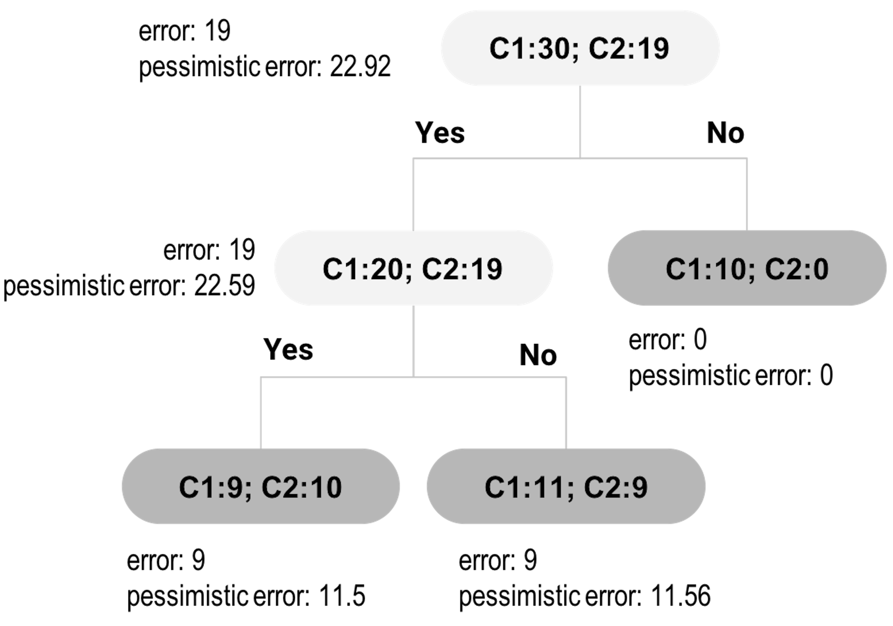
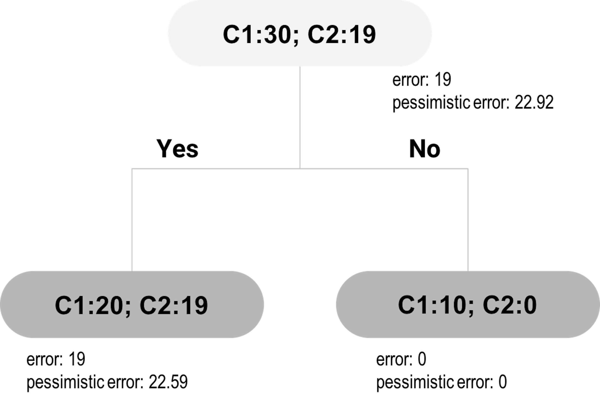

People unconsciously interprets a regression model as a causal model. When an unconscious interpretation is stated, it seems absurd and untrue, but it is fair to say that the line between a statistical model and a causal model is often blurred. We cannot blame ourselves for falling for this temptation before we have had a chance to see it through a critical lens, since both models share the same representation: an asymmetric form where predictors are on one side of the equation and the outcome is on the other side. Plus, the concept of significance is no less confusing: a common misinterpretation is to treat the statistical significance of a predictor as evidence of causal significance in the application context. The fact is that statistical significance doesn’t imply that the relationship between the predictor and the outcome variable is causal.
To see this, in what follows we will show an example that the statistical significance of a variable would disappear when some other variables are added into the model. Still using the AD dataset, we fit a regression model using the variable AGE only.
lm.AD.age <- lm(MMSCORE ~ AGE, data = AD)
summary(lm.AD.age)And the result is shown below.
##
## Call:
## lm(formula = MMSCORE ~ AGE, data = AD)
##
## Residuals:
## Min 1Q Median 3Q Max
## -8.7020 -0.9653 0.6948 1.6182 2.5447
##
## Coefficients:
## Estimate Std. Error t value Pr(>|t|)
## (Intercept) 30.44147 0.94564 32.191 <2e-16 ***
## AGE -0.03333 0.01296 -2.572 0.0104 *
## ---
## Signif. codes: 0 '***' 0.001 '**' 0.01 '*' 0.05 '.' 0.1 ' ' 1
##
## Residual standard error: 2.11 on 515 degrees of freedom
## Multiple R-squared: 0.01268, Adjusted R-squared: 0.01076
## F-statistic: 6.614 on 1 and 515 DF, p-value: 0.0104The predictor, AGE, is significant since its p-value is \(0.0104\).
Now let’s include more demographics variables into the model.
# fit the multiple linear regression model
# with more than one predictor
lm.AD.demo <- lm(MMSCORE ~ AGE + PTGENDER + PTEDUCAT,
data = AD)
summary(lm.AD.demo)And the result is shown below.
##
## Call:
## lm(formula = MMSCORE ~ AGE +
## PTGENDER + PTEDUCAT, data = AD)
##
## Residuals:
## Min 1Q Median 3Q Max
## -8.4290 -0.9766 0.5796 1.4252 3.4539
##
## Coefficients:
## Estimate Std. Error t value Pr(>|t|)
## (Intercept) 27.70377 1.11131 24.929 < 2e-16 ***
## AGE -0.02453 0.01282 -1.913 0.0563 .
## PTGENDER -0.43356 0.18740 -2.314 0.0211 *
## PTEDUCAT 0.17120 0.03432 4.988 8.35e-07 ***
## ---
## Signif. codes: 0 '***' 0.001 '**' 0.01 '*' 0.05 '.' 0.1 ' ' 1
##
## Residual standard error: 2.062 on 513 degrees of freedom
## Multiple R-squared: 0.0612, Adjusted R-squared: 0.05571
## F-statistic: 11.15 on 3 and 513 DF, p-value: 4.245e-07Now we can see that the predictor AGE is on the boardline of significance with a p-value \(0.0563\). The other predictors, PTGENDER and PTEDUCAT, are significant. The reason that the predictor AGE is now no longer significant is an interesting phenomenon, but it is not unusual in practice that a significant predictor becomes insignificant when other variables are included or excluded^[This is because of the statistical dependence of the estimation of the predictors. Remember that \(\beta\) and \(\hat{\beta}\) are two different entities. In the ground truth the two regression coefficients, \(\beta_i\) and \(\beta_j\), may be independent with each other, but \(\hat{\beta}_i\) and \(\hat{\beta}_j\) could still be correlated.
As we have known that
\[ \operatorname{cov}(\widehat{\boldsymbol{\beta}})=\sigma_{\epsilon}^{2}\left(\boldsymbol{X}^{T} \boldsymbol{X}\right)^{-1}, \]
as long as \(\boldsymbol{X}^{T} \boldsymbol{X}\) is not an identity matrix, the estimators of the regression parameters are dependent in a complicated and data-dependant way. Due to this reason, we need to be cautious about how to interpret the estimated regression parameters, as they are interrelated constructs.].
One strategy to mitigate this problem is to explore your data from every possible angle, and try out different model formulations. The goal of your data analysis is not to get a final conclusive model that dictates the rest of the analysis process. The data analysis is an exploratory and dynamic process, i.e., as you see, the dynamic interplay of the variables, how they impact each others’ significance in predicting the outcome, is something you could only obtain by analyzing the data in an exploratory and dynamic way. The fact that a model fits the data well and passes the significance test only means that there is nothing significant in the data that is found to be against the model. The goodness-of-fit of the data doesn’t mean that the data says this model is the only causal model and other models are impossible.
Related to this issue of “statistical model vs. causal model,” the design of experiments (DOE) is a discipline which provides systematic data collection procedures to render the regression model as a causal model. How this could be done demands a lengthy discussion and illustration47 Interested readers may start with this book: Goos, P. and Jones, B., Optimal Design of Experiments: A Case Study Approach, Wiley, 2011.. Here, we briefly review its foundation to see why it has the connection with a linear regression model.
We have seen in Eq. (18) that the uncertainty of \(\widehat{\boldsymbol{\beta}}\) comes from two sources, the noise in the data that is encoded in \(\sigma_{\epsilon}^{2}\), and the structure of \(\boldsymbol{X}\). \(\sigma_{\epsilon}^{2}\) reflects essential uncertainty inherent in the system, but \(\boldsymbol{X}\) is about how we collect the data. Thus, experimental design methods seek to optimize the structure of \(\boldsymbol{X}\) such that the uncertainty of \(\widehat{\boldsymbol{\beta}}\) could be minimized.
For example, suppose that there are three predictors. Let’s consider the following structure of \(\boldsymbol{X}\)
\[ \boldsymbol{X}=\left[ \begin{array}{lll}{1} & {0} & {0} \\ {0} & {1} & {0} \\ {0} & {0} & {1} \end{array}\right]. \]
It can be seen that, with this structure, the variance of \(\widehat{\boldsymbol{\beta}}\) is48 \(\boldsymbol{I}\) is the identity matrix. Here, \(\boldsymbol{I}_3 = \left[ \begin{array}{lll}{1} & {0} & {0} \\ {0} & {1} & {0} \\ {0} & {0} & {1} \end{array}\right].\)
\[cov(\hat{\boldsymbol{\beta}})=\sigma_{\epsilon}^2\boldsymbol{I}_3.\]
In other words, we can draw two main observations. First, the estimations of the regression parameters are now independent, given that their correlations are zero. Second, the variances of the estimated regression parameters are the same. Because of these two traits, this data matrix \(\boldsymbol X\) is ideal and adopted in DOE to create factorial designs. For a linear regression model built on a dataset with such a data matrix, adding or deleting variables from the regression model will not result in changes of the estimations of other parameters.
Let’s look at the tree in Figure 22. It has one root node, one inner node, and three leaf nodes. The target for tree pruning, for this example, is the inner node. In other words, should we prune the inner node and its subsequent child nodes?
 Figure 22: An example of tree pruning using pessimistic error
We have mentioned that if the improvement on error is not significant, we should prune the node. Let’s denote the empirical error rate49 Empirical error is derived based on the training data. as \(\hat e\). The reason we give the notation a hat is because it is only an estimate of an underlying parameter, the true error \(e\). \(\hat e\) is usually smaller than \(e\), and thus, it is considered to be optimistic. To create a fairer estimate of \(e\), the pessimistic error estimation approach is used for tree pruning.
The pessimistic error estimation, like a regression model, builds on a hypothesized data-generating mechanism . Here, the data is the errors we observed from the training data. A data point can be either correctly or wrongly classified, and we can view the probability of being wrongly classified as a Bernoulli trial, while the parameter of this Bernoulli trial, commonly denoted as \(p\), is \(e\). If we denote the total number of errors we have observed on the \(n\) data points as \(d\), we can derive that \(d\) is distributed as a binomial distribution. We can write this data-generating mechanism as
\[ d \sim Bino\left(n, e\right). \]
Since \(n\) is usually large, we can use the normal approximation for the binomial distribution
\[ d \sim N\left(ne, ne(1-e)\right). \]
As \(\hat e = d/n\), we have
\[ \hat e \sim N\left(e, \frac{e(1-e)}{n}\right). \]
Skipping further derivations (more assumptions are imposed, indeed, to derive the following conclusion), we can derive the confidence interval of \(e\) as
\[\hat e - z_{\alpha/2} \sqrt{\frac{\hat{e}(1-\hat{e})}{n}} \leq e \leq \hat{e} +z_{\alpha/2} \sqrt{\frac{\hat{e}(1-\hat{e})}{n}}.\]
The upper bound of the interval, \(\hat{e} +z_{\alpha/2} \sqrt{\frac{\hat{e}(1-\hat{e})}{n}}\), is named as the pessimistic error. The tree pruning methods that use the pessimistic error are motivated by a conservative perspective.
The pessimistic error depends on three values: \(\alpha\), which is often set to be \(0.25\) so that \(z_{\alpha/2}=1.15\); \(\hat e\), which is the training error rate; and \(n\), which is the number of data points at the node50 The pessimistic error is larger with a smaller \(n\), an estimation method that accounts for the sample size..
Now let’s revisit Figure 22.
First, let’s derive the pessimistic errors for the two child nodes of the inner node. The empirical error rate for the left child node is \(\hat e = \frac{9}{19}=0.4737\). For the pessimistic error, we can get that
\[\hat{e} +z_{\alpha/2} \sqrt{\frac{\hat{e}(1-\hat{e})}{n}} = 0.4737 + 1.15\sqrt{\frac{0.4737(1-0.4737)}{19}}=0.605.\]
With this error rate, for a node with \(19\) data points, the total misclassified data points can be \(mp=0.605\times 19=11.5\).
For the right child node, the empirical error rate is \(\hat e = \frac{9}{20}=0.45\). For the pessimistic error, we can get that
\[\hat{e} +z_{\alpha/2} \sqrt{\frac{\hat{e}(1-\hat{e})}{n}} = 0.45 + 1.15\sqrt{\frac{0.45(1-0.45)}{20}}=0.578.\]
With this error rate, for a node with \(20\) data points, the total misclassified data points can be \(mp=0.578\times 20=11.56\).
Thus, if we keep this branch, the total misclassified data points would be \(mp=11.5+11.56=23.06\).
 Figure 23: The pruned tree of Figure 22
Now let’s evaluate the alternative: to cut the branch. This means the inner node will become a decision node, as shown in Figure 23. We will label the new decision node as C1, since \(20\) of the included data points are labeled as C1, while \(19\) are labeled as C2. The empirical error rate \(e\) is \(\hat e = \frac{19}{39}=0.4871\). For the pessimistic error, we can get that
\[\hat{e} +z_{\alpha/2} \sqrt{\frac{\hat{e}(1-\hat{e})}{n}} = 0.4871 + 1.15\sqrt{\frac{0.4871(1-0.4871)}{39}}=0.579.\]
With this error rate, for a dataset with 39 data points, the total misclassified data points can be \(mp=0.579\times 39=22.59\). This is what would happen if we prune the tree. As \(22.59 < 23.06\), pruning is a better decision.
The pruned tree is shown in Figure 23. A complete post-pruning method will continue to consider further pruning: now consider pruning the child nodes of the root node. Following the process outlined above, the would-be misclassified data points based on the pessimistic error rate at the root node is \(22.92\), and the total misclassified instances based on the pessimistic error rate from its child nodes is \(22.59+0=22.59\). Pruning the child nodes would lead to increased error. Thus, no further pruning is needed: the child nodes are kept and the final tree consists of three nodes.